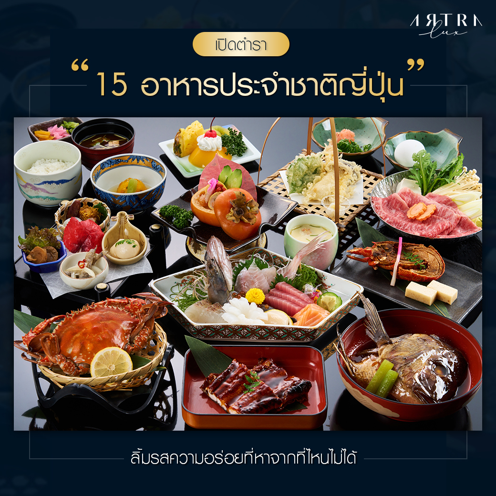

อาหารประจำชาติและเอกลักษณ์ด้านอาหารประเทศญี่ปุ่น

อาหารประจำชาติญี่ปุ่นที่โดดเด่นที่สุดคือ ซูชิ (Sushi) ซาชิมิ ราเม็ง และเทมปุระ ซึ่งสะท้อนเอกลักษณ์ความประณีต เน้นวัตถุดิบสดใหม่ตามฤดูกาล และรสชาติ "อุมามิ" (Umami) ที่เป็นธรรมชาติ โดยมีข้าวเป็นอาหารหลัก ควบคู่ไปกับการใช้น้ำซุปดาชิและโชยุ ปรุงแต่งอาหารอย่างพิถีพิถันเพื่อคงรสชาติที่แท้จริงของวัตถุดิบ